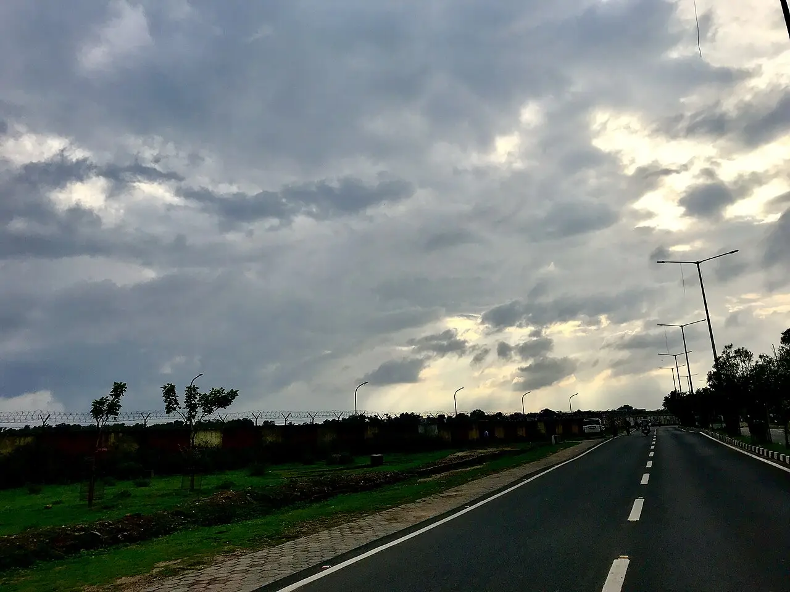
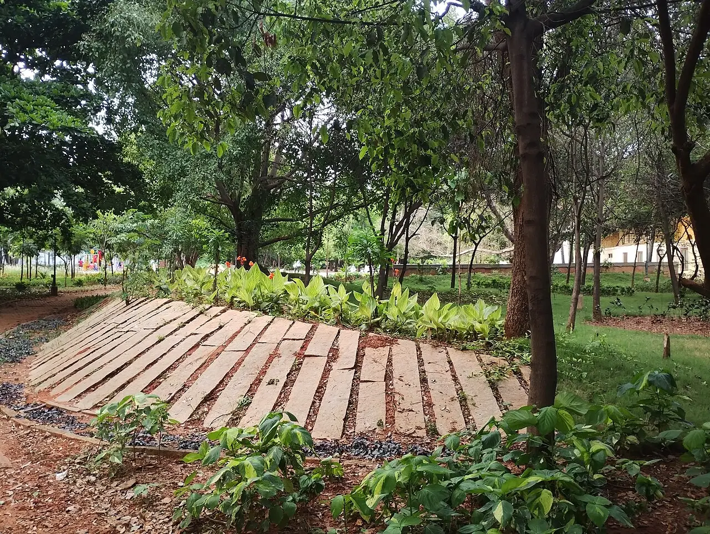
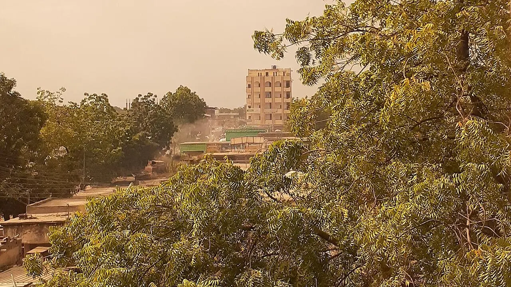

Khalid, Imam bail sent to larger bench
The Supreme Court sought police replies by 14 Dec on bail for Umar Khalid and Sharjeel Imam, held over six years under UAPA, but refused interim bail until a three-judge bench rules.
Source: The HinduPreview. A copy of proposed changes; nothing on the live site links here. What is in this preview →
Human rights in India and the world. Non-partisan. Every fact sourced.
The Supreme Court sought police replies by 14 Dec on bail for Umar Khalid and Sharjeel Imam, held over six years under UAPA, but refused interim bail until a three-judge bench rules.
Source: The Hindu
Police detained over a dozen people protesting a 10-lane road that a petition says needs about 7,000 trees felled. Police said protests are barred within 1 km of the Assembly.
Source: Indian ExpressThe Calcutta High Court gave the Centre until 10 Dec to answer forest-rights challenges to the Great Nicobar project and deferred final hearings to January. The Centre says the Forest Rights Act doesn't apply.
Source: Indian Express
A Bengaluru court granted interim anticipatory bail on 25 Nov to author Ravi Hanj and publisher Vishweshwar Bhat. Prosecutors said the book insulted Basavanna; police say they are still seizing copies.
Source: Deccan Herald · The Hindu
Rain drenched about 200 ASHA workers on day nine at Freedom Park; five were hospitalised in two days. The CM promised to raise their ₹15,000 demand; they want it in writing.
Source: South First · Prajavani (Kannada)
Drones hit homes in Ed Damazin and El Roseires on 24 Nov, killing 16 to 19, including 14 from three families, local officials said. They blamed the RSF and SPLM-N; no response was reported.
Source: Dabanga · Radio Tamazuj
An Israeli strike on a Shati camp flat killed a Hamas security official, his wife and daughters aged 15 and 13, Gaza's interior ministry said. Israel's military said it 'eliminated' a 'terrorist'.
Source: BBC
UN rights chief Volker Türk warned on 25 Nov of a widening risk of atrocity crimes against Palestinians; his office says 42,666 were displaced in the West Bank since Oct 2023. No Israeli response reported.
Source: UN News
Zambian police banned a 25 Nov march by rights groups opposing calls to scrap presidential term limits, citing a rival rally. Organisers appealed; a minister said the president seeks no third term.
Source: Al Jazeera
A year after the Wang Fuk Court fire killed 168, HRW says critics were arrested for sedition and memorials curbed. Officials apologised and pledged reform; police say event decisions rest with organisers.
Source: Human Rights WatchTwo young men arrested by soldiers in Kapoeta on 30 Oct were killed, a father says; their bodies are missing. The army says they were freed that night; the governor's office is following up.
Source: Radio Tamazuj
President Salva Kiir ordered forces on 25 Nov not to arrest or harass candidates and campaigners for lawful activity, after parties complained of travel curbs. Campaigning runs 27 Dec to 9 Feb.
Source: Radio Tamazuj
.jpg){kind=link}
_31.jpg){kind=link}